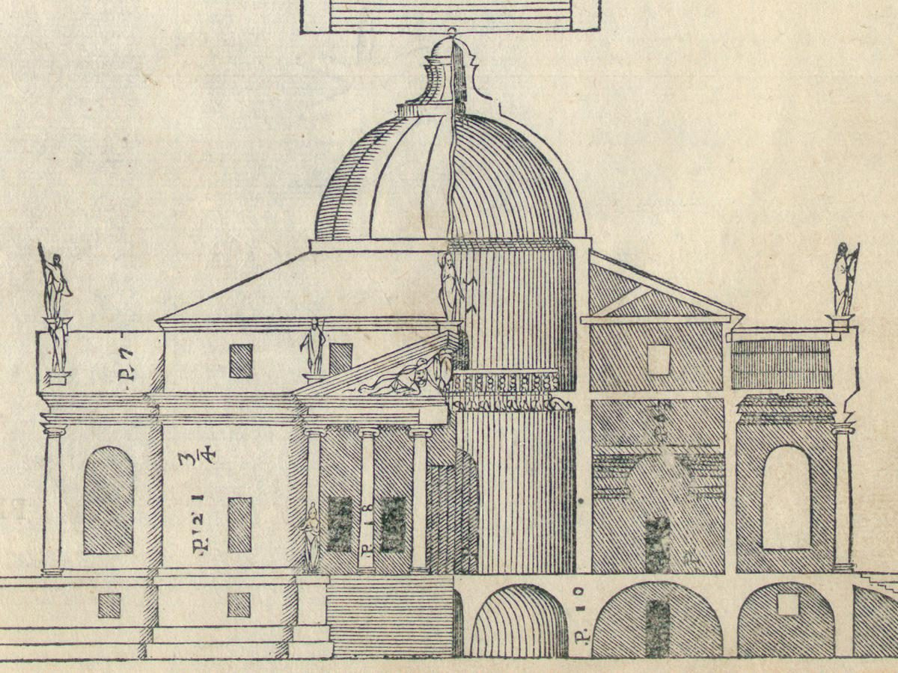

<title>Palladio Musterseite</title>
<meta name="viewport" content="width=device-width, initial-scale=1">
<style>
@font-face { font-family: 'EB Garamond'; font-style: normal; font-weight: 400 800; font-display: swap; unicode-range: U+0000-00FF,U+0131,U+0152-0153,U+02BB-02BC,U+02C6,U+02DA,U+02DC,U+0304,U+0308,U+0329,U+2000-206F,U+20AC,U+2122,U+2191,U+2193,U+2212,U+2215,U+FEFF,U+FFFD; src: url('../../products/wordpress/palladio/assets/fonts/eb-garamond/eb-garamond-latin-wght-normal.woff2') format('woff2'); }
@font-face { font-family: 'EB Garamond'; font-style: italic; font-weight: 400 800; font-display: swap; unicode-range: U+0000-00FF,U+0131,U+0152-0153,U+02BB-02BC,U+02C6,U+02DA,U+02DC,U+0304,U+0308,U+0329,U+2000-206F,U+20AC,U+2122,U+2191,U+2193,U+2212,U+2215,U+FEFF,U+FFFD; src: url('../../products/wordpress/palladio/assets/fonts/eb-garamond/eb-garamond-latin-wght-italic.woff2') format('woff2'); }
@font-face { font-family: 'EB Garamond'; font-style: normal; font-weight: 400 800; font-display: swap; unicode-range: U+0100-02BA,U+02BD-02C5,U+02C7-02CC,U+02CE-02D7,U+02DD-02FF,U+0304,U+0308,U+0329,U+1D00-1DBF,U+1E00-1E9F,U+1EF2-1EFF,U+2020,U+20A0-20AB,U+20AD-20C0,U+2113,U+2C60-2C7F,U+A720-A7FF; src: url('../../products/wordpress/palladio/assets/fonts/eb-garamond/eb-garamond-latin-ext-wght-normal.woff2') format('woff2'); }
@font-face { font-family: 'EB Garamond'; font-style: italic; font-weight: 400 800; font-display: swap; unicode-range: U+0100-02BA,U+02BD-02C5,U+02C7-02CC,U+02CE-02D7,U+02DD-02FF,U+0304,U+0308,U+0329,U+1D00-1DBF,U+1E00-1E9F,U+1EF2-1EFF,U+2020,U+20A0-20AB,U+20AD-20C0,U+2113,U+2C60-2C7F,U+A720-A7FF; src: url('../../products/wordpress/palladio/assets/fonts/eb-garamond/eb-garamond-latin-ext-wght-italic.woff2') format('woff2'); }
:root { --wp--preset--color--calce: #f7f5f0; --wp--preset--color--inchiostro: #424037; --wp--preset--color--carta: #dfd8c5; --wp--preset--color--pietra: #66645c; --wp--preset--color--linea: #cac8c2; --wp--preset--font-size--small: clamp(0.7969rem, 0.7613rem + 0.1616vw, 0.8906rem); --wp--preset--font-size--medium: clamp(1.0625rem, 1.0151rem + 0.2155vw, 1.1875rem); --wp--preset--font-size--large: clamp(1.4167rem, 1.2784rem + 0.6286vw, 1.7812rem); --wp--preset--font-size--x-large: clamp(1.8889rem, 1.5919rem + 1.35vw, 2.6719rem); --wp--preset--font-size--xx-large: clamp(2.5185rem, 1.9536rem + 2.5677vw, 4.0078rem); --wp--preset--font-size--huge: clamp(3.358rem, 2.3515rem + 4.5753vw, 6.0117rem); --wp--preset--spacing--10: clamp(0.3984rem, 0.3807rem + 0.0808vw, 0.4453rem); --wp--preset--spacing--20: clamp(0.7969rem, 0.7613rem + 0.1616vw, 0.8906rem); --wp--preset--spacing--30: clamp(1.5938rem, 1.5226rem + 0.3233vw, 1.7812rem); --wp--preset--spacing--40: clamp(2.3906rem, 2.2839rem + 0.4849vw, 2.6719rem); --wp--preset--spacing--50: clamp(3.1875rem, 3.0453rem + 0.6466vw, 3.5625rem); --wp--preset--spacing--60: clamp(3.5859rem, 3.4259rem + 0.7274vw, 4.0078rem); --wp--preset--spacing--70: clamp(4.7812rem, 4.5679rem + 0.9698vw, 5.3438rem); --wp--preset--spacing--80: clamp(6.375rem, 6.0905rem + 1.2931vw, 7.125rem); --wp--preset--font-family--eb-garamond: "EB Garamond", Garamond, "Times New Roman", serif; --wp--custom--palladio--modulo: clamp(1.5938rem, 1.5226rem + 0.3233vw, 1.7812rem); --wp--custom--palladio--minuto: calc(clamp(1.5938rem, 1.5226rem + 0.3233vw, 1.7812rem) / 60); --wp--custom--palladio--abschnitt: var(--wp--preset--spacing--60); --wp--custom--palladio--ziel: 2.75rem; color-scheme: light; }
@media (prefers-color-scheme: dark) { :root:not([data-theme="light"]) { --wp--preset--color--calce: #282621; --wp--preset--color--inchiostro: #ece8dc; --wp--preset--color--carta: #38362f; --wp--preset--color--pietra: #aca697; --wp--preset--color--linea: #56524a; color-scheme: dark; } }
:root[data-theme="dark"] { --wp--preset--color--calce: #282621; --wp--preset--color--inchiostro: #ece8dc; --wp--preset--color--carta: #38362f; --wp--preset--color--pietra: #aca697; --wp--preset--color--linea: #56524a; color-scheme: dark; }
* { box-sizing: border-box; }
body { margin: 0; background: var(--wp--preset--color--calce); color: var(--wp--preset--color--inchiostro);
  font-family: var(--wp--preset--font-family--eb-garamond); font-size: var(--wp--preset--font-size--medium);
  line-height: 1.5; padding-inline: var(--wp--preset--spacing--40); }
h1, h2, h3, h4, h5, h6 { margin: var(--wp--preset--spacing--50) 0 var(--wp--preset--spacing--20); }
h1 { font-size: var(--wp--preset--font-size--xx-large); line-height: 1.229; letter-spacing: -0.01em; font-weight: 400; }
h2 { font-size: var(--wp--preset--font-size--x-large); line-height: 1.297; letter-spacing: -0.005em; font-weight: 400; }
h3 { font-size: var(--wp--preset--font-size--large); line-height: 1.386; letter-spacing: 0; font-weight: 400; }
h4 { font-size: var(--wp--preset--font-size--medium); line-height: 1.5; letter-spacing: 0; font-weight: 400; font-style: italic; }
h5 { font-size: var(--wp--preset--font-size--medium); line-height: 1.5; letter-spacing: 0; font-weight: 400; font-style: italic; }
h6 { font-size: var(--wp--preset--font-size--small); line-height: 1.5; letter-spacing: 0.08em; font-weight: 400; text-transform: uppercase; }
p { margin: 0 0 var(--wp--preset--spacing--30); }
a { color: inherit; } a:hover { color: var(--wp--preset--color--pietra); }
.c { max-width: 33.75rem; margin-inline: auto; }
.w { max-width: 50.625rem; margin-inline: auto; }
header.site { display: flex; flex-direction: column; align-items: center; gap: var(--wp--preset--spacing--20);
  padding-block: var(--wp--preset--spacing--50) var(--wp--preset--spacing--40); }
.site-title { font-size: var(--wp--preset--font-size--large); letter-spacing: 0.04em; text-transform: uppercase; margin: 0; }
nav ul { list-style: none; margin: 0; padding: 0; display: flex; flex-wrap: wrap; justify-content: center;
  gap: 0 var(--wp--preset--spacing--40); }
nav a { text-decoration: none; }
section { padding-block: var(--wp--preset--spacing--60); }
.button { display: inline-flex; align-items: center; min-height: var(--wp--custom--palladio--ziel);
  background: var(--wp--preset--color--inchiostro); color: var(--wp--preset--color--calce); text-decoration: none;
  padding: var(--wp--preset--spacing--20) var(--wp--preset--spacing--40); }
.lead { font-size: var(--wp--preset--font-size--large); line-height: 1.386; }
.rooms { display: grid; grid-template-columns: 1fr 1fr; gap: var(--wp--preset--spacing--50); align-items: center; }
.rooms img { width: 100%; aspect-ratio: 4/3; object-fit: cover; display: block; }
figcaption, .label { color: var(--wp--preset--color--pietra); font-size: var(--wp--preset--font-size--small); }
figcaption { font-style: italic; margin-top: var(--wp--preset--spacing--10); }
.step { display: grid; grid-template-columns: 13rem 1fr; align-items: baseline; gap: var(--wp--preset--spacing--30);
  border-top: 1px solid var(--wp--preset--color--linea); padding-block: var(--wp--preset--spacing--10); overflow: hidden; }
.forms { display: grid; grid-template-columns: repeat(6, 1fr); gap: var(--wp--preset--spacing--30); align-items: end; }
.form { margin: 0; } .box { width: 100%; max-width: 100%; border: 1px solid var(--wp--preset--color--inchiostro); }
.space { display: grid; grid-template-columns: calc(4 * var(--wp--custom--palladio--modulo)) 1fr; align-items: center;
  gap: var(--wp--preset--spacing--30); margin-bottom: var(--wp--preset--spacing--10); }
.bar { display: inline-block; height: 0.6rem; background: var(--wp--preset--color--inchiostro); flex: none; }
.swatches { display: grid; grid-template-columns: repeat(5, 1fr); gap: var(--wp--preset--spacing--30); }
.chip { display: block; aspect-ratio: 1/1; border: 1px solid var(--wp--preset--color--linea); }
.table-wrap { overflow-x: auto; }
table { border-collapse: collapse; width: 100%; font-size: var(--wp--preset--font-size--small); line-height: 1.4; }
th, td { text-align: left; vertical-align: top; padding: var(--wp--preset--spacing--10) var(--wp--preset--spacing--20) var(--wp--preset--spacing--10) 0;
  border-top: 1px solid var(--wp--preset--color--linea); }
th { font-weight: 600; }
footer.site { border-top: 1px solid var(--wp--preset--color--linea); margin-top: var(--wp--preset--spacing--70);
  padding-block: var(--wp--preset--spacing--60); text-align: center; }
@media (max-width: 40rem) { .rooms { grid-template-columns: 1fr; } .forms { grid-template-columns: repeat(3, 1fr); }
  .swatches { grid-template-columns: repeat(3, 1fr); } .step { grid-template-columns: 1fr; gap: 0; } }


/* Only what theme.json cannot express. Every rule names its source (data/interpretation/web.json). */

/* W-OTTICA: balanced headings, no widows in titles */
h1, h2, h3, .wp-block-post-title { text-wrap: balance; }
p { text-wrap: pretty; hyphens: auto; -webkit-hyphens: auto; }

/* Renaissance figures in running text, lining figures in tables */
body { font-variant-numeric: oldstyle-nums proportional-nums; font-kerning: normal; }
table, .wp-block-table { font-variant-numeric: lining-nums tabular-nums; }

/* W-ORNAMENT: links are underlined because otherwise one cannot see them; the line stays thin */
a { text-decoration-thickness: 1px; text-underline-offset: 0.18em; }

/* W-TREPPE: targets bright, wide and comfortable */
.wp-block-navigation-item__content,
.wp-block-button__link,
.wp-element-button { min-height: var(--wp--custom--palladio--ziel); display: inline-flex; align-items: center; }

/* W-SERVIZI: serving parts small but reachable */
.palladio-servizi { font-size: var(--wp--preset--font-size--small); color: var(--wp--preset--color--pietra); }
.palladio-servizi a { color: inherit; }

/* W-FORMEN: never wider than two squares */
.wp-block-cover { max-height: none; }
.wp-block-image img, .wp-block-post-featured-image img { max-width: 100%; height: auto; }

/* W-ACHSE: the axis of the page stays in the middle */
.palladio-mitte { text-align: center; }
.palladio-mitte > * { margin-left: auto; margin-right: auto; }

/* Visible focus for keyboard users */
:focus-visible { outline: 1px solid currentColor; outline-offset: 0.2em; }

@media (prefers-reduced-motion: reduce) {
	* { scroll-behavior: auto !important; transition: none !important; animation: none !important; }
}

</style>
<header class="site">
  <p class="site-title">Palladio</p>
  <nav aria-label="Hauptnavigation"><ul><li><a href="#mitte">Werk</a></li><li><a href="#regeln">Regeln</a></li>
  <li><a href="#formen">Formen</a></li><li><a href="#farben">Farben</a></li></ul></nav>
</header>
<main>
<section id="mitte" class="w palladio-mitte" style="padding-block: var(--wp--preset--spacing--80)">
  <h6>Musterseite</h6>
  <h1 style="font-size: var(--wp--preset--font-size--huge); line-height: 1.177; letter-spacing: -0.015em">Klar, wahr, schön</h1>
  <p class="lead c">Ein WordPress-Theme nach Regeln aus Andrea Palladios <em>Quattro Libri</em>, Venedig 1570. Jede Übertragung ist eine Deutung und nennt ihre Fundstellen.</p>
  <p><a class="button" href="#regeln">Die Regeln ansehen</a></p>
</section>
<section class="w rooms">
  <figure style="margin:0"><figcaption>Palladio, I quattro libri, 1570, Buch II, S. 19</figcaption></figure>
  <div><h2>Ein Raum für das Bild, einer für das Wort</h2>
  <p>Zwei gleiche Spalten, rechts wie links. Das Bild steht im Format 4 : 3, einer der sieben Raumformen. Text und Bild nutzen dieselben zwei Breiten wie alle Abschnitte, so dass die Kanten übereinander stehen.</p></div>
</section>
<section id="schrift" class="w">
  <h2 class="c">Schriftgrade aus den drei Mitteln</h2>
  <p class="c">Zwischen 1 und 2 liegen das harmonische Mittel 4/3, das geometrische √2 und das arithmetische 3/2 (I.XXIII). Auf schmalen Bildschirmen wächst die Skala in Schritten von 4/3, auf breiten von 3/2. Je größer der Grad, desto enger Zeilenabstand und Laufweite.</p>
  <div class='step'><span class='label'>Klein · 0.80–0.89 rem</span><span style='font-size: var(--wp--preset--font-size--small); line-height: 1.5; letter-spacing: 0em'>Proportione</span></div>
<div class='step'><span class='label'>Text · 1.06–1.19 rem</span><span style='font-size: var(--wp--preset--font-size--medium); line-height: 1.5; letter-spacing: 0em'>Proportione</span></div>
<div class='step'><span class='label'>Groß · 1.42–1.78 rem</span><span style='font-size: var(--wp--preset--font-size--large); line-height: 1.386; letter-spacing: 0em'>Proportione</span></div>
<div class='step'><span class='label'>Sehr groß · 1.89–2.67 rem</span><span style='font-size: var(--wp--preset--font-size--x-large); line-height: 1.297; letter-spacing: -0.005em'>Proportione</span></div>
<div class='step'><span class='label'>Titel · 2.52–4.01 rem</span><span style='font-size: var(--wp--preset--font-size--xx-large); line-height: 1.229; letter-spacing: -0.01em'>Proportione</span></div>
<div class='step'><span class='label'>Eingang · 3.36–6.01 rem</span><span style='font-size: var(--wp--preset--font-size--huge); line-height: 1.177; letter-spacing: -0.015em'>Proportione</span></div>
</section>
<section id="formen" class="w">
  <h2 class="c">Sieben Raumformen, sechs Formate</h2>
  <p class="c">Quadrat, Diagonale des Quadrats, 4 : 3, 3 : 2, 5 : 3 und zwei Quadrate (I.XXI.5). Nichts ist breiter als 2 : 1; der Kreis bleibt Porträts vorbehalten. In einer Reihe haben alle Bilder dasselbe Format (I.XXV.6).</p>
  <div class="forms"><figure class='form'><div class='box' style='aspect-ratio: 1/1'></div><figcaption>1:1 · Quadrat</figcaption></figure>
<figure class='form'><div class='box' style='aspect-ratio: 1.4142/1'></div><figcaption>√2:1 · Diagonale des Quadrats</figcaption></figure>
<figure class='form'><div class='box' style='aspect-ratio: 4/3'></div><figcaption>4:3 · 4 : 3</figcaption></figure>
<figure class='form'><div class='box' style='aspect-ratio: 3/2'></div><figcaption>3:2 · 3 : 2</figcaption></figure>
<figure class='form'><div class='box' style='aspect-ratio: 5/3'></div><figcaption>5:3 · 5 : 3</figcaption></figure>
<figure class='form'><div class='box' style='aspect-ratio: 2/1'></div><figcaption>2:1 · zwei Quadrate</figcaption></figure></div>
</section>
<section id="abstaende" class="c">
  <h2>Ein Modul, sechzig Minuten</h2>
  <p>Der Modul ist die Zeilenhöhe des Fließtexts (1.594–1.781 rem). Die Abstände sind Vielfache, mit Palladios Säulenstellungen 1½, 2, 2¼ und 3 (I.XIII.11, I.XIII.6). Abschnitte stehen 2¼ Moduln auseinander.</p>
  <div class='space'><span class='bar' style='width: var(--wp--preset--spacing--10)'></span><span class='label'>¼ Modul</span></div>
<div class='space'><span class='bar' style='width: var(--wp--preset--spacing--20)'></span><span class='label'>½ Modul</span></div>
<div class='space'><span class='bar' style='width: var(--wp--preset--spacing--30)'></span><span class='label'>1 Modul</span></div>
<div class='space'><span class='bar' style='width: var(--wp--preset--spacing--40)'></span><span class='label'>1½ Moduln</span></div>
<div class='space'><span class='bar' style='width: var(--wp--preset--spacing--50)'></span><span class='label'>2 Moduln</span></div>
<div class='space'><span class='bar' style='width: var(--wp--preset--spacing--60)'></span><span class='label'>2¼ Moduln (Eustylos)</span></div>
<div class='space'><span class='bar' style='width: var(--wp--preset--spacing--70)'></span><span class='label'>3 Moduln</span></div>
<div class='space'><span class='bar' style='width: var(--wp--preset--spacing--80)'></span><span class='label'>4 Moduln</span></div>
</section>
<section id="farben" class="c">
  <h2>Farben aus dem Druck von 1570</h2>
  <p>Papier und Druckfarbe sind am Scan gemessen und zu einem warmen Weiß aufgehellt (IV.II.12). Schrift auf Grund 9.54 : 1, Nebentext 5.44 : 1.</p>
  <div class="swatches"><div class='swatch'><span class='chip' style='background: #f7f5f0'></span><span class='label'>Calce (Grund)<br>#f7f5f0</span></div>
<div class='swatch'><span class='chip' style='background: #424037'></span><span class='label'>Inchiostro (Schrift)<br>#424037</span></div>
<div class='swatch'><span class='chip' style='background: #dfd8c5'></span><span class='label'>Carta (Papier des Scans)<br>#dfd8c5</span></div>
<div class='swatch'><span class='chip' style='background: #66645c'></span><span class='label'>Pietra (Nebentext)<br>#66645c</span></div>
<div class='swatch'><span class='chip' style='background: #cac8c2'></span><span class='label'>Linea (Haarlinie)<br>#cac8c2</span></div></div>
</section>
<section id="regeln" class="w">
  <h2 class="c">Die Regeln dieses Themes</h2>
  <div class="table-wrap"><table><thead><tr><th>Übertragung</th><th>Fundstellen</th><th>Analogie</th><th>Im Web</th></tr></thead>
  <tbody><tr><td>Ein relatives Grundmaß</td><td>I.XIII.11, I.I.5</td><td>eng</td><td>Alle Längen gehen von einem Modul aus: der Zeilenhöhe des Fließtexts. Feine Maße in Minuten (1/60 Modul). Angaben in rem, damit die Einstellung des Lesers gilt; Pixel nur für Haarlinien.</td></tr>
<tr><td>Abstände aus den Säulenstellungen</td><td>I.XIII.4, I.XIII.6, IV.IIII.7</td><td>lose</td><td>Die Abstandsskala besteht aus ¼, ½, 1, 1½, 2, 2¼, 3 und 4 Moduln. Abschnitte einer Seite stehen 2¼ Moduln auseinander, große Abschnitte 3 Moduln.</td></tr>
<tr><td>Sieben Raumformen als Bildformate</td><td>I.XXI.5, I.XXI.3</td><td>eng</td><td>Bilder, Karten und Felder haben eines der sechs rechteckigen Formate. Nichts ist breiter als 2:1. Der Kreis ist selten und nur für Porträts.</td></tr>
<tr><td>Schriftgrade aus den drei Mitteln</td><td>I.XXIII.3, I.XXIII.4, I.XXIII.5, I.XXIII.6</td><td>eng</td><td>Zwischen 1 und 2 liegen die drei Mittel 3/2, √2 und 4/3. Sie sind die Stufen der Schriftskala: auf kleinen Bildschirmen 4/3, auf großen 3/2, dazwischen gleitend.</td></tr>
<tr><td>Große Glieder in großen Bauten</td><td>II.I.4, II.II.6</td><td>lose</td><td>Modul und Schriftgrade wachsen mit der Bildschirmbreite, innerhalb fester Grenzen. Eine Seite hat große, mittlere und kleine Abschnitte, die einander entsprechen.</td></tr>
<tr><td>Die Wahrnehmung korrigiert das Maß</td><td>I.XIII.2, IV.V.12</td><td>lose</td><td>Je größer die Schrift, desto geringer der Zeilenabstand im Verhältnis und desto enger die Laufweite. So erscheinen große und kleine Grade gleich ruhig.</td></tr>
<tr><td>Eine Mitte, durchgehende Achsen</td><td>I.XXI.2, I.XXI.4, I.XXV.8, I.XIII.9</td><td>lose</td><td>Jede Seite hat eine Hauptachse in der Mitte. Ränder links und rechts sind gleich. Alle Abschnitte nutzen dieselben zwei Breiten, so dass Kanten übereinander stehen. Raster haben eine gerade Spaltenzahl.</td></tr>
<tr><td>Ein Bildmaß je Reihe</td><td>I.XXV.6</td><td>eng</td><td>In einer Reihe oder Galerie haben alle Bilder dasselbe Format, unabhängig vom Motiv.</td></tr>
<tr><td>Kein Ornament ohne Aufgabe</td><td>I.XX.3, I.XX.5, I.XX.8, I.XX.11</td><td>lose</td><td>Keine Schatten, Verläufe oder Zierrahmen. Linien nur, wo sie trennen. Überschriften stehen in Proportion zum Text (W-MITTEL). Links sind unterstrichen, weil man sie sonst nicht erkennt.</td></tr>
<tr><td>Navigation wie eine gute Treppe</td><td>I.XXVIII.2, I.XXVIII.3</td><td>lose</td><td>Die Navigation ist sofort sichtbar, kurz und führt zum wichtigsten Inhalt. Ziele sind mindestens 2¾ rem hoch und stehen ½ Modul auseinander.</td></tr>
<tr><td>Dienende Teile verborgen, aber erreichbar</td><td>II.II.2</td><td>lose</td><td>Impressum, Datenschutz, Anmeldung und Ähnliches stehen klein im Fuß der Seite, nie im Kopf.</td></tr>
<tr><td>Weiß, ruhige Bilder, angemessenes Licht</td><td>IV.II.12, IV.II.13, I.XXV.12</td><td>lose</td><td>Grund ein warmes Weiß, Schrift dunkle Druckfarbe, keine Signalfarben. Bilder ordnen sich dem Text unter. Weder reines Weiß noch reines Schwarz; Kontrast mindestens 7 : 1.</td></tr>
<tr><td>Abweichung mit Anmut</td><td>IV.XXIIII.1, I.XX.7</td><td>eng</td><td>Jede Regel dieser Richtlinie darf gebrochen werden, wenn es dem Inhalt dient. Die Abweichung wird benannt.</td></tr></tbody></table></div>
  <h3 class="c">Verworfen</h3>
  <ul class="c"><li><strong>Säulenabstand als Spaltenabstand im Raster.</strong> (I.XIII.6, I.XIII.8). Im Bau ist der Raum zwischen den Säulen 1½- bis 3-mal so breit wie die Säule. Im Raster einer Webseite ist der Inhalt der Raum und der Abstand die Wand. Ein Abstand von 2¼ Spaltenbreiten wäre widersinnig.</li>
<li><strong>Säulenhöhe nach Säulenabstand (je enger, desto schlanker) als Kopplung von Zeilenlänge und Zeilenabstand.</strong> (I.XIII.8). Der Zeilenabstand des Fließtexts bestimmt hier den Modul, und die Textbreite ist in Moduln gemessen. Hinge der Zeilenabstand von der Textbreite ab, wäre das Grundmaß zirkulär.</li>
<li><strong>Gebälk ⅕ der Säule mit Architrav, Fries und Gesims 4 : 3 : 5 als Verhältnis von Kopf, Inhalt und Fuß der Seite.</strong> (I.XVI.7, I.XVII.5). Eine Seite trägt keine Last, und ihr Kopf richtet sich nach dem Inhalt. Die Übertragung wäre Zahlensymbolik.</li>
<li><strong>Die festeste Ordnung nach unten: ein schwerer Fuß, ein leichter Kopf.</strong> (I.XII.1). Eine Seite wird von oben gelesen; der Titel braucht Gewicht zur Orientierung.</li>
<li><strong>Das mittlere Joch etwas weiter: in Galerien ein breiterer mittlerer Abstand.</strong> (I.XIII.9). Auf dem Bildschirm wirkt ein ungleicher Abstand wie ein Fehler. Übernommen ist nur die gerade Spaltenzahl (W-ACHSE).</li></ul>
</section>
</main>
<footer class="site">
  <p class="palladio-servizi"><a href="#">Impressum</a> · <a href="#">Datenschutz</a></p>
  <p class="palladio-servizi">Gesetzt in EB Garamond. Maße nach Andrea Palladio, <em>I quattro libri dell'architettura</em>, Venedig 1570. Vorschau aus denselben Werten wie das Theme, keine WordPress-Ausgabe.</p>
</footer>
